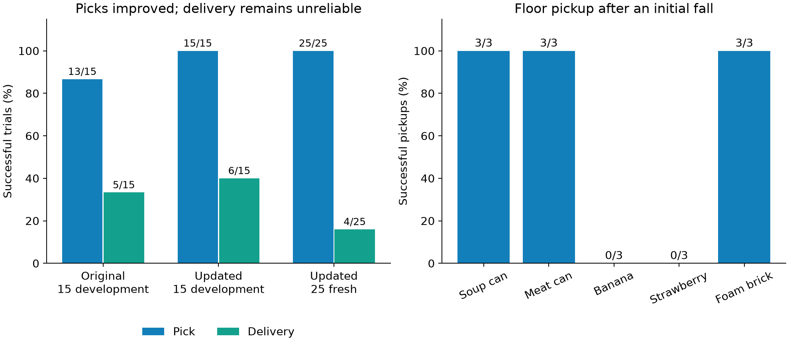
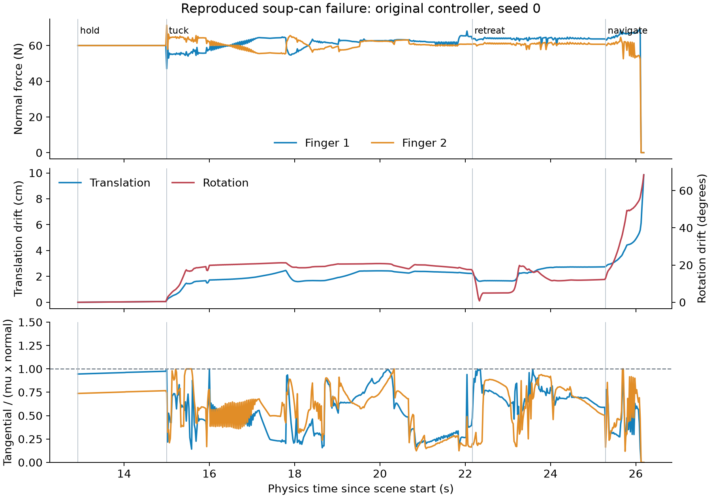

Team 47 · CS4278 · 22 November 2026
Picking improved; transport remains an open problem. Development picks: 13/15 → 15/15; deliveries: 5/15 → 6/15. Fresh-seed results: 25/25 picks and 4/25 deliveries. Floor recovery is implemented and tested separately; it is not a guarantee that a faster full delivery will succeed.

The loaded finger and object friction coefficients are both 0.5, so their combined coefficient is 0.25. The original proposal filter assumed 0.5. Bullet combines these coefficients by multiplication (official source). The original soup-can failure was reproduced at physics step 6,285. Both fingers already produced approximately 60 N during the static hold. Rotation and translation relative to the gripper grew before contact was lost. The tangential-load diagnostic was already close to its nominal friction limit during holding.
This evidence points to contact geometry, internal shear, and inadequate resistance to transport disturbances. It does not identify a single universal cause. Changing carry orientation, reducing squeeze, and increasing solver iterations did not fix the selected can failures. Gentler acceleration retained some grasps longer but exceeded the 15,000-step task limit. The supplied robot, masses, friction, force limits, and constraints remain unchanged.

The controller moves the empty arm faster and finishes closure after sustained measured loading. It still closes the fingers fully, lifts physically, and checks the hold. An optional finite-pad wrench model evaluates gravity and four lateral acceleration loads using the measured friction and 60 N per-jaw limit. The default applies this model to elongated clouds only, because applying it to every shape degraded compact-object results.
The model is approximate: it uses a point-cloud estimate of the center of mass, sampled pad contacts, and an inscribed friction pyramid. Its mass-capacity value is a ranking signal, not a success certificate.
After an observed slip, the optional recovery controller brakes, opens the hand, and waits for a sufficiently slow floor contact. It searches nearby robot stances and antipodal grasps, checks the approach and a complete lift, executes through ordinary motor actions, and requires 50 stable hold observations. Floor collision checks cover the arm and fingers; existing floor contact is permitted only at the start of lifting. Recovery never resets or attaches the task object. All recovery actions count toward the original 15,000-physics-step deadline.
Floor trajectories respect individual joint velocity limits. A fixed step size shared by prismatic and revolute joints caused a large hand-position error in an early foam-brick test; respecting the joint limits corrected that isolated pickup. Approaches are checked against their actual final position before closing.
Successful pickups after real transport slips were observed for both cans. The recovered object can still slip again during navigation. Recovery therefore resumes in the lifted pose and replans the route using the newly observed payload. Rolling objects, inaccessible stances, and low-clearance IK remain limitations.
Floor-pick replay · Final floor-pick image
The controlled comparison uses the same five objects and seed 0. Standard transport requests 0.9 m/s with 0.8 m/s² acceleration; faster transport requests 1.8 m/s with 1.6 m/s² acceleration. These are commanded limits, not a claim that the robot tracks every requested speed exactly. A successful floor pickup is counted separately from a successful delivery. Failed, blocked, and timed-out trials remain in every denominator.
| Policy | Deliveries | Recovery attempts | Successful floor pickups |
|---|---|---|---|
| Standard, no recovery | 2/5 | 0 | 0 |
| Standard, recovery | 2/5 | 3 | 3 |
| Faster, no recovery | 1/5 | 0 | 0 |
| Faster, recovery | 1/5 | 4 | 2 |
The comparison does not support increasing speed. Standard-speed recovery picked up all three dropped objects, but they slipped again later. The faster profile reduced deliveries from 2/5 to 1/5, with or without recovery. Keep the standard profile as the default. This five-case development comparison is small; it is evidence against assuming free recovery, not a general speed guarantee.
| Object | Seed | Outcome | Physics steps | Recovered | Reason | Evidence |
|---|---|---|---|---|---|---|
| Soup can | 0 | FAIL | 5810 | - | object slipped from the gripper | data |
| Soup can | 7 | FAIL | 4880 | - | object slipped from the gripper | data |
| Soup can | 42 | FAIL | 4155 | - | object slipped from the gripper | data |
| Meat can | 0 | FAIL | 4855 | - | object slipped from the gripper | data |
| Meat can | 7 | FAIL | 5355 | - | object slipped from the gripper | data |
| Meat can | 42 | FAIL | 3420 | - | object slipped from the gripper | data |
| Banana | 0 | PASS | 13320 | - | delivered and held at goal | data |
| Banana | 7 | PASS | 13480 | - | delivered and held at goal | data |
| Banana | 42 | FAIL | 5900 | - | object slipped from the gripper | data |
| Strawberry | 0 | PASS | 12895 | - | delivered and held at goal | data |
| Strawberry | 7 | PASS | 13155 | - | delivered and held at goal | data |
| Strawberry | 42 | PASS | 13715 | - | delivered and held at goal | data |
| Foam brick | 0 | FAIL | 5745 | - | object slipped from the gripper | data |
| Foam brick | 7 | PASS | 13110 | - | delivered and held at goal | data |
| Foam brick | 42 | FAIL | 4640 | - | object slipped from the gripper | data |
Seeds 1, 11, 23, 83, and 101 were held out from controller selection.
| Object | Seed | Outcome | Physics steps | Recovered | Reason | Evidence |
|---|---|---|---|---|---|---|
| Soup can | 1 | FAIL | 3690 | - | object slipped from the gripper | data |
| Soup can | 11 | FAIL | 4215 | - | object slipped from the gripper | data |
| Soup can | 23 | FAIL | 5330 | - | object slipped from the gripper | data |
| Soup can | 83 | FAIL | 5670 | - | object slipped from the gripper | data |
| Soup can | 101 | FAIL | 5560 | - | object slipped from the gripper | data |
| Meat can | 1 | FAIL | 4845 | - | object slipped from the gripper | data |
| Meat can | 11 | FAIL | 3615 | - | object slipped from the gripper | data |
| Meat can | 23 | FAIL | 5405 | - | object slipped from the gripper | data |
| Meat can | 83 | FAIL | 4850 | - | object slipped from the gripper | data |
| Meat can | 101 | FAIL | 4995 | - | object slipped from the gripper | data |
| Banana | 1 | FAIL | 7705 | - | object slipped from the gripper | data |
| Banana | 11 | FAIL | 5075 | - | no route for the carrying footprint | data |
| Banana | 23 | PASS | 14575 | - | delivered and held at goal | data |
| Banana | 83 | FAIL | 15000 | - | 15000 physics-step budget exhausted | data |
| Banana | 101 | FAIL | 4740 | - | object slipped from the gripper | data |
| Strawberry | 1 | PASS | 13715 | - | delivered and held at goal | data |
| Strawberry | 11 | FAIL | 13780 | - | final object-position correction blocked | data |
| Strawberry | 23 | PASS | 14425 | - | delivered and held at goal | data |
| Strawberry | 83 | PASS | 14580 | - | delivered and held at goal | data |
| Strawberry | 101 | FAIL | 15000 | - | 15000 physics-step budget exhausted | data |
| Foam brick | 1 | FAIL | 10730 | - | object slipped from the gripper | data |
| Foam brick | 11 | FAIL | 5590 | - | object slipped from the gripper | data |
| Foam brick | 23 | FAIL | 5920 | - | object slipped from the gripper | data |
| Foam brick | 83 | FAIL | 13675 | - | object slipped from the gripper | data |
| Foam brick | 101 | FAIL | 15000 | - | 15000 physics-step budget exhausted | data |
Objects start above the floor with a sideways orientation before the first physics step. These are initialization fixtures, not recovered full-task trials. They are never added to the delivery rate.
| Object | Seed | Outcome | Physics steps | Recovered | Reason | Evidence |
|---|---|---|---|---|---|---|
| Soup can | 0 | PASS | 3535 | - | regrasped from floor and held | data |
| Soup can | 7 | PASS | 3545 | - | regrasped from floor and held | data |
| Soup can | 42 | PASS | 3540 | - | regrasped from floor and held | data |
| Meat can | 0 | PASS | 3575 | - | regrasped from floor and held | data |
| Meat can | 7 | PASS | 3575 | - | regrasped from floor and held | data |
| Meat can | 42 | PASS | 3580 | - | regrasped from floor and held | data |
| Banana | 0 | FAIL | 500 | - | object did not settle on the floor | data |
| Banana | 7 | FAIL | 500 | - | object did not settle on the floor | data |
| Banana | 42 | FAIL | 500 | - | object did not settle on the floor | data |
| Strawberry | 0 | FAIL | 500 | - | object did not settle on the floor | data |
| Strawberry | 7 | FAIL | 500 | - | object did not settle on the floor | data |
| Strawberry | 42 | FAIL | 500 | - | object did not settle on the floor | data |
| Foam brick | 0 | PASS | 3415 | - | regrasped from floor and held | data |
| Foam brick | 7 | PASS | 3445 | - | regrasped from floor and held | data |
| Foam brick | 42 | PASS | 3435 | - | regrasped from floor and held | data |
| Object | Seed | Outcome | Physics steps | Recovered | Reason | Evidence |
|---|---|---|---|---|---|---|
| Soup can | 0 | FAIL | 11230 | 1 | object slipped from the gripper | data |
| Meat can | 0 | FAIL | 10275 | 1 | object slipped from the gripper | data |
| Banana | 0 | PASS | 13320 | - | delivered and held at goal | data |
| Strawberry | 0 | PASS | 12895 | - | delivered and held at goal | data |
| Foam brick | 0 | FAIL | 10975 | 1 | object slipped from the gripper | data |
| Object | Seed | Outcome | Physics steps | Recovered | Reason | Evidence |
|---|---|---|---|---|---|---|
| Soup can | 0 | FAIL | 5715 | - | object slipped from the gripper | data |
| Meat can | 0 | FAIL | 4855 | - | object slipped from the gripper | data |
| Banana | 0 | FAIL | 5415 | - | object slipped from the gripper | data |
| Strawberry | 0 | PASS | 9990 | - | delivered and held at goal | data |
| Foam brick | 0 | FAIL | 5585 | - | object slipped from the gripper | data |
| Object | Seed | Outcome | Physics steps | Recovered | Reason | Evidence |
|---|---|---|---|---|---|---|
| Soup can | 0 | FAIL | 10820 | 1 | object slipped from the gripper | data |
| Meat can | 0 | FAIL | 9555 | 1 | object slipped from the gripper | data |
| Banana | 0 | FAIL | 6075 | 0 | object did not settle on the floor | data |
| Strawberry | 0 | PASS | 9990 | - | delivered and held at goal | data |
| Foam brick | 0 | FAIL | 10625 | 0 | floor closure did not contact both fingers | data |
See the repository README for commands. Trial JSON, contact diagnostics, and CSV traces are retained. The experiment inventory includes unsuccessful development studies, and archived research source preserves discarded variants. These results do not establish hidden-test performance or reliable recovery in every maze. The project remains a tested research prototype with unresolved transport reliability.